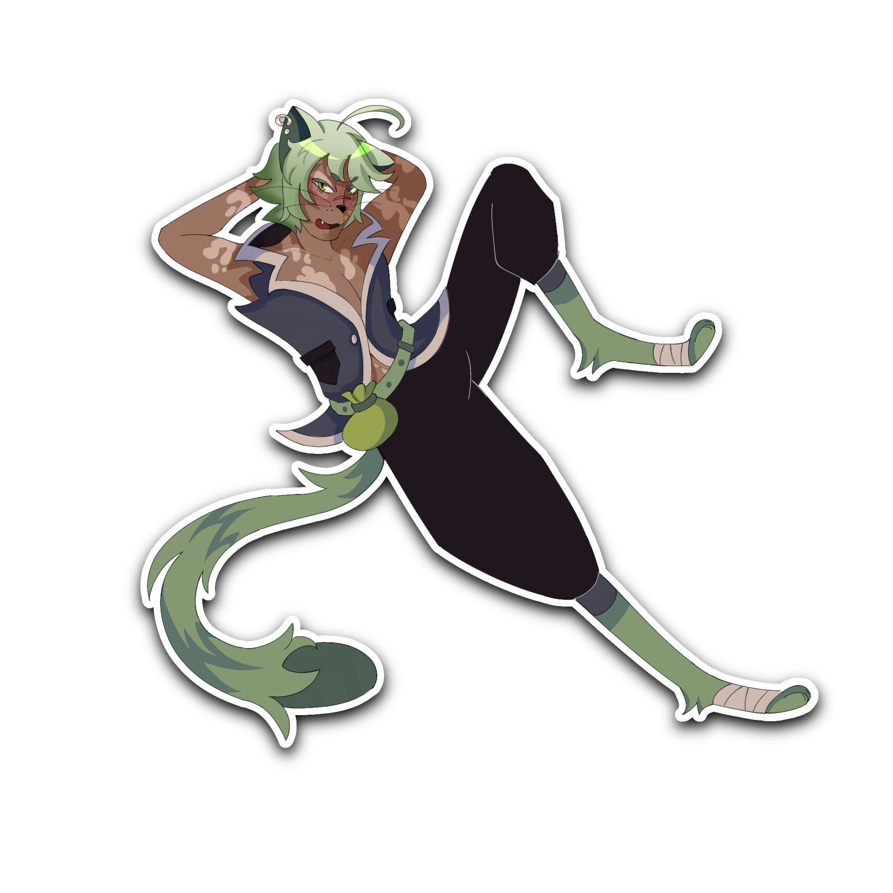
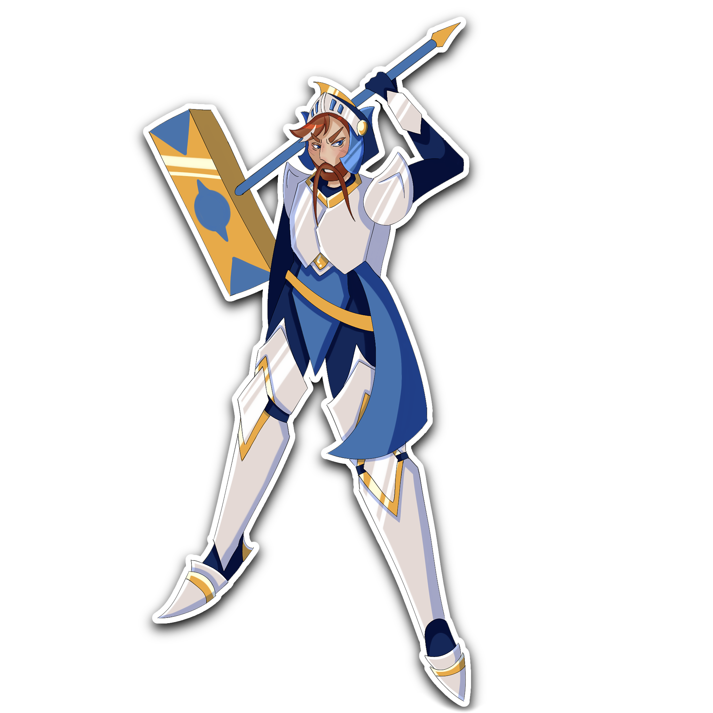
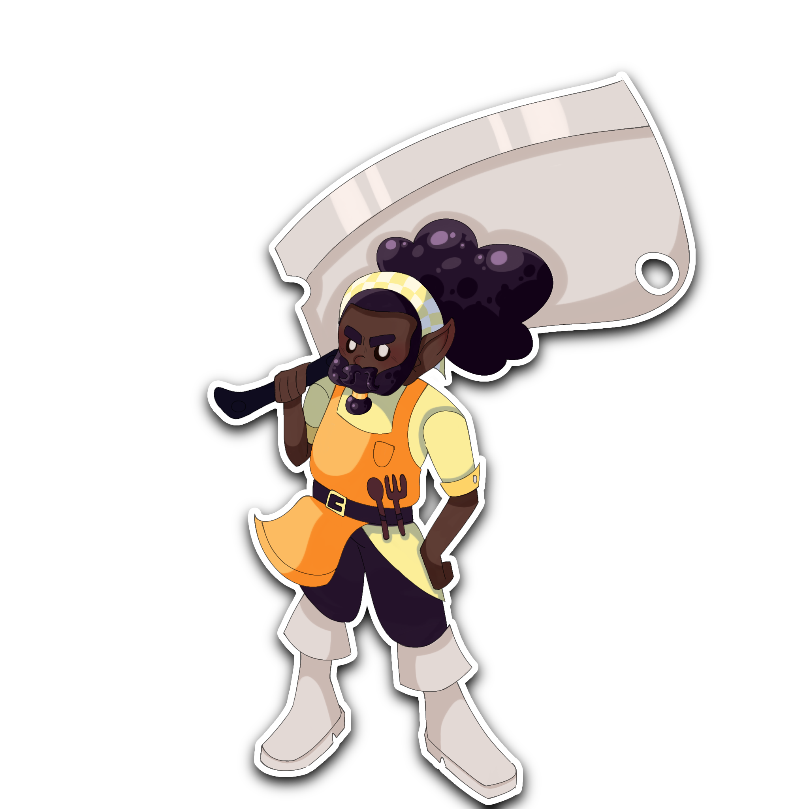
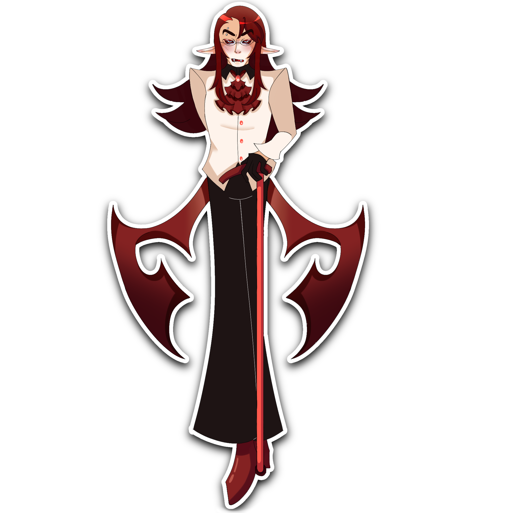

História: O CatMan é um Catfolk (humanoide com traços felinos) que fez dos becos, vielas e telhados o seu verdadeiro império. Crescendo nas ruas mais impiedosas, ele aprendeu cedo que a força bruta não é nada comparada à astúcia, tornando-se um ladino manhoso e incrivelmente oportunista.
Sua maior vantagem não é apenas a furtividade, mas a exímia capacidade de se comunicar com os felinos de rua. Ele transformou todos os gatos vadios em uma rede de espiões invisível, usando a magia furtiva Sussurros do Beco para reunir informações secretas e vendê-las para quem pagar mais.
Embora sua aparência fofa e comportamento dócil enganem muitos nobres desavisados, ele é letal quando encurralado. Sua missão de vida é simples: descobrir os segredos e as fraquezas alheias, tirar o máximo de proveito da situação e desaparecer antes mesmo que percebam que foram roubados.
"Heróis morrem pela glória. Vilões morrem pelo poder. Eu? Eu caio de pé e saio de fininho com o tesouro de ambos."
Ele é extremamente perigoso pois ninguém desconfia de um gato de rua, o que lhe dá acesso livre aos segredos mais obscuros de qualquer castelo ou guilda.

História: O Grão-Mestre Bhalfur é o líder supremo da Ordem do Punho Radiante, um campeão veterano cuja fé na Luz é inabalável. Como a personificação da justiça e da honra, ele carrega o peso de proteger os reinos dos vivos contra qualquer ameaça profana, marchando na linha de frente com seu pesado martelo de guerra.
Em combate, Bhalfur é uma força que inspira exércitos inteiros a não desistirem. Ele invoca a Aura da Devoção para fortalecer o espírito e os escudos de seus aliados, enquanto desfere a justiça divina contra hereges, purgando campos de batalha manchados pela morte.
Recentemente, perturbadores boatos do submundo chamaram sua atenção: rumores dizem que um nobre de sangue vampírico está controlando o Flagelo não para destruir, mas para proteger vilas isoladas. Bhalfur sabe que o Conde Gale se refugia no Antigo Vale, e agora organiza sua cavalaria para descobrir se este necromante é um milagre ou sua maior heresia.
"Se as sombras ousam marchar contra o nosso lar, eu serei o martelo que quebra a escuridão. Nós não recuaremos!"

O Habibies é um peregrino excêntrico e um caçador de feras implacável. Enquanto outros aventureiros exploram masmorras em busca de ouro ou glória, ele viaja pelos confins mais perigosos do mundo em busca de uma única coisa: os ingredientes perfeitos e mais exóticos para suas receitas.
Em combate, ele não usa arcos ou bestas como caçadores comuns. Ele empunha um cutelo gigante extremamente afiado que funciona perfeitamente como arma de destruição em massa, utilizando a técnica de Preparo Brutal para abater e fatiar monstros com carapaças blindadas em questão de segundos.
Mas seu verdadeiro império não é feito de sangue, e sim de temperos. Habibies fundou uma famosa rede de tabernas e restaurantes espalhados pelo continente. Lá, ele treina seus aprendizes para cozinhar a carne das feras que ele caça, criando banquetes mágicos que fortalecem qualquer guerreiro que consuma seus pratos.
A força física bruta necessária para balançar seu cutelo faz dele um monstro no combate corpo a corpo, mas sua sabedoria sobre a anatomia das feras é o que o torna letal.
"No topo da cadeia alimentar não estão os dragões, os mortos-vivos ou os demônios. Estou eu, afiando meu cutelo."

História: O Conde Gale é um ser dividido: filho de uma bondosa cientista humana e de um impiedoso lorde vampiro. Desde a infância, ele ouvia os sussurros dos espíritos, mas foi o desespero para salvar sua vila de uma tragédia que o fez cruzar a linha proibida da magia.
Ao misturar os estudos de sua mãe com seu sangue amaldiçoado, ele acidentalmente despertou o Flagelo, uma horda caótica de mortos-vivos. Porém, guiado pela forte moralidade com a qual foi criado, Gale resistiu à corrupção sombria que devora os necromantes.
Gale é letal porque seu exército nunca dorme, não sente dor e cresce a cada inimigo que cai. Além de sua herança vampírica, sua mente científica o torna um estrategista frio e implacável no campo de batalha.
"Alguém precisa governar os monstros para que eles não devorem os inocentes. Se o preço é caminhar eternamente pelas trevas, eu o pago de bom grado."

| Nome | Universo/Facção | Poder Principal | Arma Clássica |
|---|